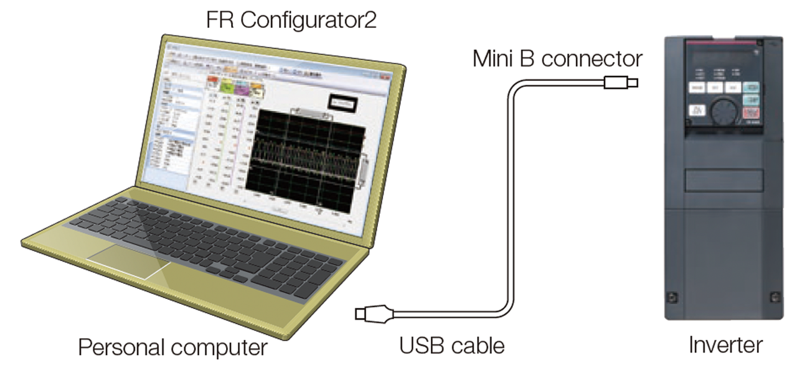
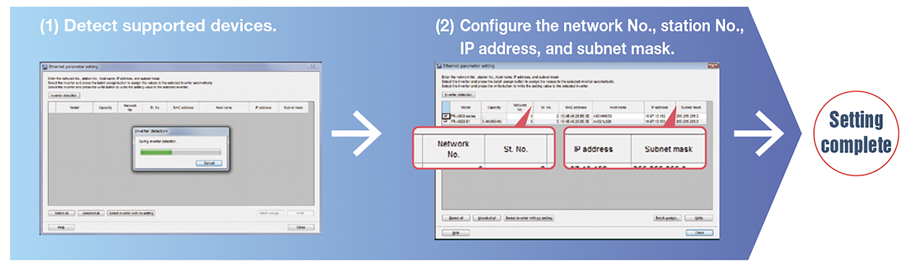
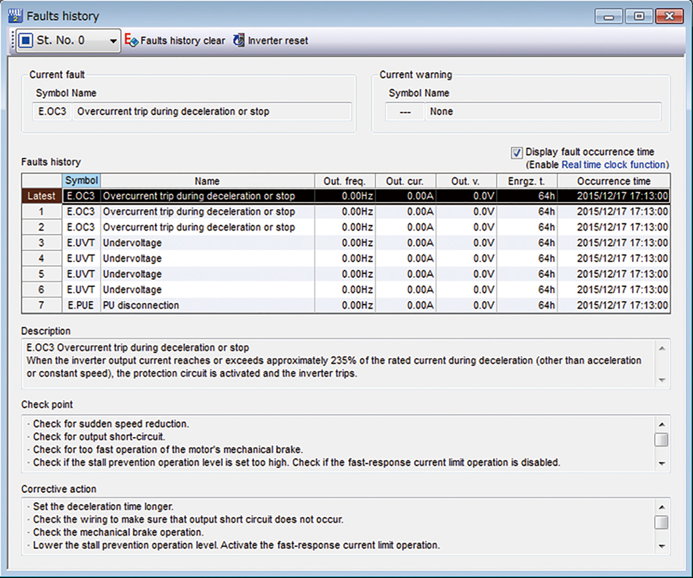
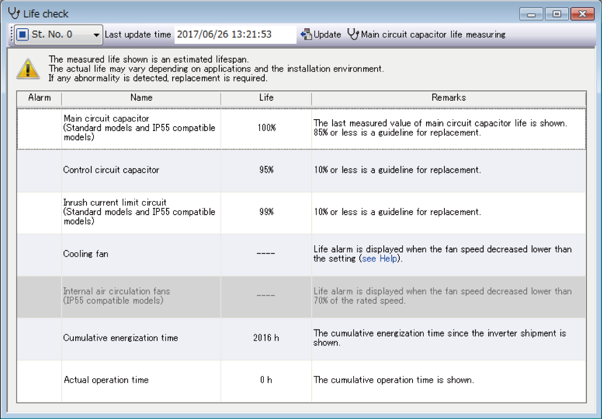

Inverters-FREQROL-A800 Plus Series -FREQROL-A800 Plus for CRANES- Memberikan lingkungan operasi inverter yang nyaman

Memberikan lingkungan pengoperasian inverter yang nyaman
Koneksi kabel USB yang mudah
Konektor USB (konektor mini B) disediakan sebagai standar. Koneksi dengan komputer pribadi dapat dibuat dengan mudah tanpa menggunakan adaptor.

Pengaturan mudahFR-A800-E-CRN
Deteksi inverter dan konfigurasikan pengaturan jaringan dengan mudah menggunakan perangkat lunak pengaturan inverter FR Configurator2.

Platform yang mudah diikuti memudahkan perawatan
- Riwayat kesalahan
Riwayat kesalahan dan waktu terjadinya kesalahan dapat ditampilkan secara bersamaan.
Kesalahan juga dapat ditampilkan saat sedang terjadi dan inverter dapat diatur ulang.

- Pemeriksaan diagnosis masa pakai
Data informasi masa pakai inverter dapat ditampilkan. Ikon peringatan ditampilkan di kolom alarm masa pakai komponen dari komponen yang direkomendasikan untuk penggantian.
Hasil diagnosis dapat diekspor ke berkas dengan fungsi keluaran data Diagnosis.
